Larimar: Large Language Models with Episodic Memory Control #
Posted by: Sunggyu Jang, Hyeonwoo Park
Authors: Payel Das (IBM AI Research), Subhajit Chaudhury (IBM AI Research) et.al
1. Background #
Large Language Model (LLM) is one of the most popular topics in these days, due to their outstanding performance on various Natural Language Processing (NLP) tasks. However, LLM has faced a lot of challenges at the same time. In this report, we especially focus on the “knowledge edit” problem.
Knowledge edit in LLM research #
Knowledge edit problem can be summarized as “constantly updating the knowledge of pre-trained LLMs to keep models fact-relevant, safe, and ethical after deployment.” [1] The point is that, we have to update the knowledge on the pre-trained model accurately and quickly. Figures below illustrate why do we need knowledge update.
- To update new knowledge
- To mitigate context length generalization problem
- To erase sensitive data

Fig1. Knowledge update: New knowledge should be injected constantly [2]

Fig2. Context length generalization: The ability to quickly update the LLM can help with "input context length generalization problem" [3]

Fig3. Selective fact forgetting: LLMs should forget personal & sensitive data [4]
Memory network #
However, knowledge edit is not so simple as it sounds. Pre-training LLMs requires substantial computational cost due to thier unprecedented amounts of parameters. Considering the fact that we have to introduce new knowledge into the pre-trained model frequently, re-training the whole model is not a feasible solution [2].
To tackle the problem, “memory network” was proposed. The main point of memory network is “to combine the successful learning strategies developed in the machine learning literature for inference with a memory component that can be read and written to.” [5]
For example, let’s assume that you’re providing new information to a pre-trained LLM. What you expect to the model is to answer the following questions based on the facts you mentioned. In this case, the model can do the job by writing the knowledge from you into a memory and reading the relevant one from the memory to answer the question. This problem is called as “Question Answering (QA).”
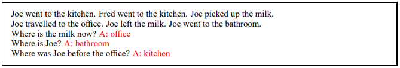
Fig4. Example of QA [5]
Variational auto encoder (VAE) #
To implement the idea of memory network, concepts from variational auto encoder are usually used. VAE is a kind of generative model to generate an output similar to real data. To be specific, it aims to approximate the true distribution of input data with three components - encoder, decoder, and latent space.
In this post, we assume that readers have knowledge about VAE. For details, please refer to [6] and [7].
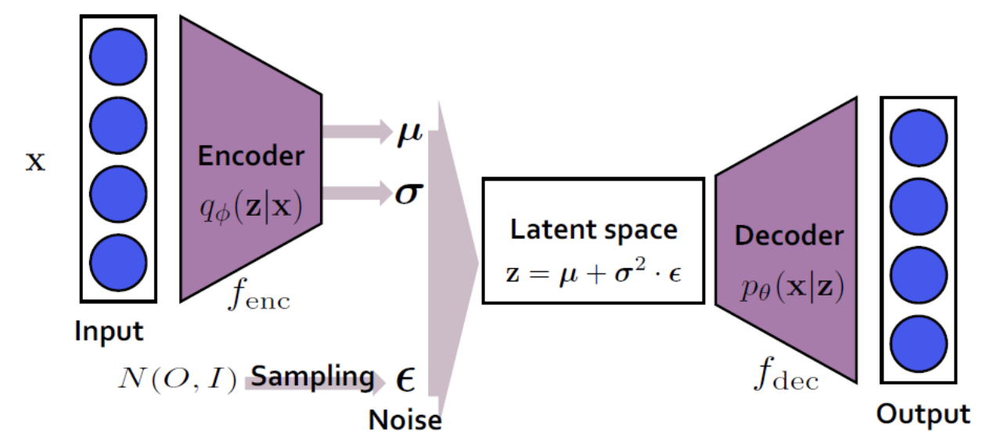
Fig5. VAE Structure [7]
Neocortex-Hippocampus interactions #
This paper imitates the role of brain. Humans can rapidly update their knowledge after encountering the first relevant instance. In the brain, this process is facilitated through interactions between the neocortex and the hippocampus. The hippocampus is the site for storing long-term memories, while the neocortex integrates long-term and short-term memories to relay the results to the body.

Fig6. Neocortex and the Hippocampus
The Complementary Learning Systems (CLS) theory proposes a model that combines these complementary learning systems of the hippocampus and neocortex. The interaction between the neocortex and hippocampus in the brain is known to promote adaptive behavior through memorization and generalization. Furthermore, it is suggested that memory consolidation from the hippocampus to the neocortex is facilitated by the activation synchronized with multiple exact or false replays of the encoded experience in the hippocampus. This implies that the hippocampus functions as a generative associative network.2. Contributions #
-
Larimar introduces a class of memory-conditioned language models inspired by complementary learning mechanisms in the brain. This architecture facilitates real-time test-time adaptation without requiring time-intensive gradient-based learning or internal fact tracing, offering a faster method for updating LLMs. Utility Demonstration in Knowledge Editing and Context Generalization:
-
The proposed method is demonstrated on two significant and challenging use cases: knowledge editing and generalizing to longer input contexts. Larimar exhibits fast and accurate training-free adaptation to new inputs in both scenarios, outperforming baseline editing methods and existing language models. Selective Fact Forgetting and Information Leakage Prevention:
-
Larimar effectively supports selective fact forgetting and prevents information leakage using its one-shot memory updating mechanism. Recursive Search-Based Solution for Long Context Generalization: A simple recursive search-based approach is provided to enable Larimar’s memory to generalize to longer input contexts.
3. Model architecture [1] #
Inspired by human brain (neocortex-hippocampus interactions), authors suggest “a class of LLMs augmented with an external episodic memory controller.” They utilize an episodic memory to mimic hippocampal fast-learning system, and use LLM as a neocortical slow learning system.
Fig7 below shows the overall architecture of Larimar. Basic idea is to implement VAE with external memory. It consists of three main components: encoder, decoder, and adaptive memory. Comparing the architecture with Fig5 would be helpful. In Larimar, memory corresponds to a latent vector.
- Encoder: Transforms the input into a latent vector
- Decoder: Generates an answer to the question conditioned on the memory
- Memory: Stores episodes in encoded form
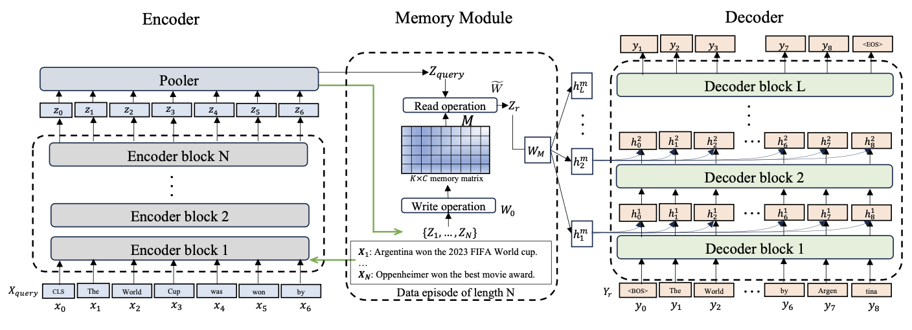
Fig7. Larimar architecture
Let’s see how it works in two stages.
3-1. Training #
(1) Writing #
The memory M in Fig7 has to be trained so as to approximate the distribution of X (X is an exchangeable-order invariant episode: X = { $x_{1}$, …, $x_{N}$ }, a subset of the input data consisting of N samples). To do so, the model is trained to maximize the conditional log-likelihood of lnp (X|M). In this way, the model learns to compress X in a memory M, which then becomes a distributed associative memory. This process is similar to that of encoder in VAE. (Look at the green arrows in Fig7)
(2) Reading #
The reading weight matrix, W, is a random variable for generative ability of the model. In this paper, authors set a standard Gaussian prior p(W) ~ N(0, $I_{N \times K}$ ) and posterior q(W) ~ N($\bar{W}$, $\sigma^2_{W} \cdot I_{N \times K}$), where the mean $\bar{W}$ is estimated from each episode and $\sigma_{W}$ is learnable. Memory readouts are obtained as Z$_{readout}$ = WM.
(3) Summary #
Three main components - encoder(e), associative memory(M), and decoder(d) - are jointly trained and optimized for an episode X, using the following loss:
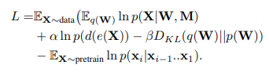
3-2. Inference #
Once M$_{0}$ is trained via backpropagation, the posterior memory M is updated in one-shot by solving a minimization problem below. This problem can be efficiently done with the pseudo-inverse of matrix. For more details, please refer to [8].

4. Memory Operations [1] #
In this paper, authors followed the ideas from [8] to combine pre-trained LLMs with memory component for knowledge edit. Fig8 illustrates the single training step of the memory.

Fig8. Basic memory operations [8]
On top of that, sequential writing and forgetting is conducted as follows.
First, given an initial set of encodings $Z_{0}$ and writing weights $W_{0}$, memory matrix and key covariance matrix are initialized as below.
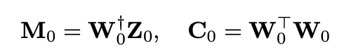
Next, memory $M_{i-1}$ is sequentially updated by adding a new set of encodings $Z_{i}$ or forgetting a previously written set of encodings $Z_{i}$. This process is conducted as below.
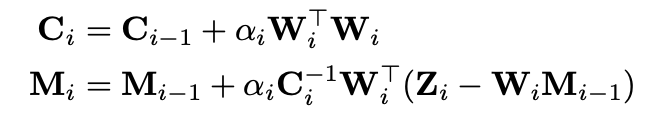
For instance, $\alpha_{i}$ is 1 for writing, -1 for forgetting.
5. Results #
Wall Clock time #

Fig9. Comparison between different editing methods and the wall clock time for a single edit
The experiment was conducted on a single A100 GPU. Comparing the wall clock time for each editing method across 10 single edits, as shown in Fig8, Larimar was found to be approximately 4-10 times faster than the existing ROME and GRACE methods. Additionally, Larimar demonstrates the ability to address sequential edits, batch edits, and forgetting/deletion, which were not previously addressed in existing work.Single Fact Editing #
This paper utilizes the CounterFact dataset for comparing Single Fact editing. The CounterFact dataset is designed to test the language model’s ability to handle counterfactual edits. It evaluates whether the model accurately learns new facts. It contains a total of 21,919 data points, and the evaluation is conducted using the first 2000 samples. In contrast to training the LLM on edits or causally tracing the original fact within the LLM and updating the relevant parameters, Larimar leverages one-shot memory update for editing. In this approach, the memory posterior is updated as the edit(s) of interest is written, and then the updated memory is queried. The read-out from the memory conditions the decoder to output the edit.
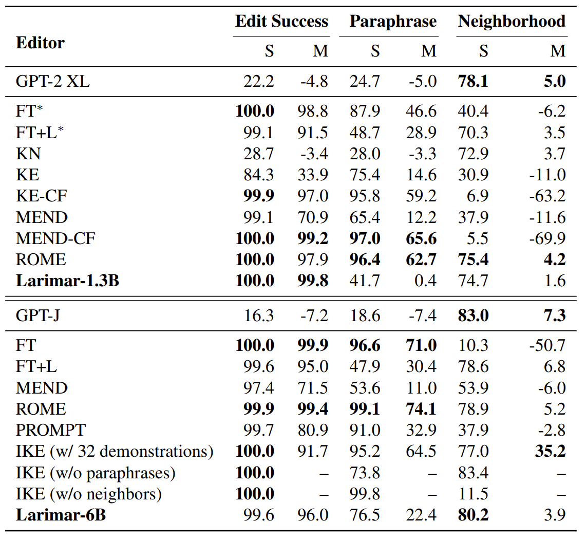
Fig10.Single fact edit performanceon CounterFact dataset comparing with baseline. Top two best systems are highlighted.
The results are shown in Fig 9. Edit Success measures the percentage of cases where the edited result has a higher probability than the original result, while Paraphrase evaluates whether the model achieves the same performance using paraphrase prompts. Neighborhood assesses the model's ability to retain knowledge about the original object. Larimar demonstrates comparable performance in editing new facts and handling prompts.Sequential Fact Editing #
To check sequential fact editing, Test retention rate(TRR) and edit retention rate(ERR) are used. TRR check how well an edited model retains its performence on tis original testing data. Larminar decoder’s perplexity was tested on 1000 random test samples from wikitext using a separate language model. In comparison, baseline models compute TRR from mean F1 scores from 1000 random samples of NQ data. ERR check how well an edited model retains previous edits. This paper, ERR was evaluated by F1 score after 1000 sequential edits when querying the memory with the encoded query Zquery for each written fact.
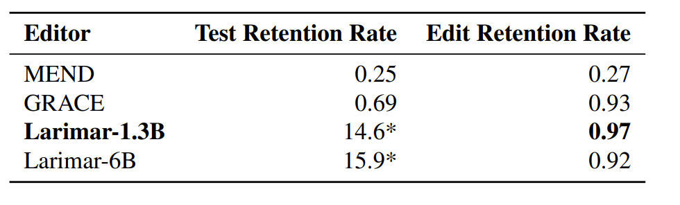
Fig11. Sequential editing on ZsRE dataset
According to the figure 9, Larimar’s comparable ERR performance to GRACE, while preserving its original test set performance.Larimar-1.3B achieves editing speeds approximately 10 or more times faster than GRACE on GPT-2 XL.Selective Forgetting #
This results shows that specific fact can be selectively erased from N facts that are have been written in Larimar’s memory.
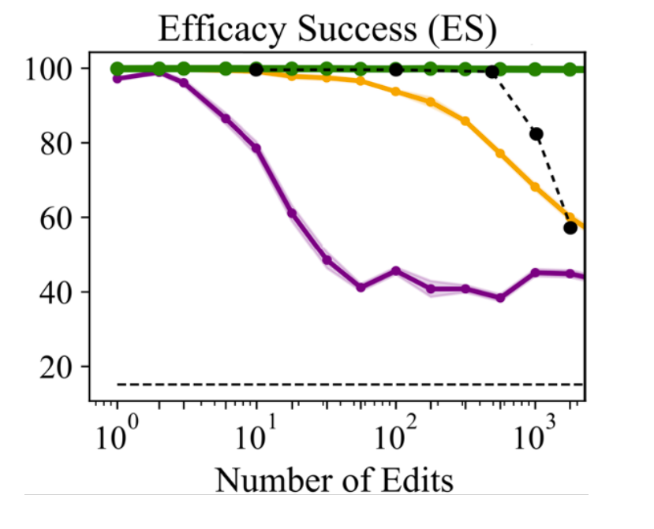
Fig12. Batch editing accuracy on counterfact dataset. Green: MEMIT, Orange: ROME, Magenta: MEND, Black: Larimar.
Fig 10 shows many edits can be written at once to memory and accurately retrieve from it. Rewrite accuracy is near 100% for up to 512 edits (the memory size K) and then drops to 82% for 1024 edits. This result shows Larimar's ability to compress more than K facts into its size-K memory. This performance level is higher when compared to baselines like MEND and ROME, but subpar compared to MEMIT, which can accurately handle a very large batch of edits at a cost of reduced editing speed and is also not meant to handle sequential editing. To test the ability of Larimar for selectively forgetting specified facts during inference, write N facts to memory and then forget one fact, and also write to memoty in its place the same fact with the answer replaced with the string "unknown." Then, compare recall for the forgotten fact before and after the forgetting operation. Paper also report the recall on the remaining N −1 facts in memory to demonstrate that forgetting does not compromise other memories. The samples used are from the ZsRE validation set and from the Counterfact test set.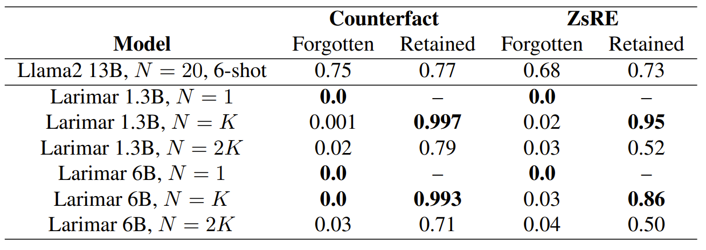
Fig13. Fraction of facts with accurate recall, for the Counterfact and ZsRE datasets, after writing N factrs to memory and removing one.
As a result, Larimar achived higher performance in forgotten and retained information is all testbench than Basemodel. This shows that Larimar works better on selective forgetting.Recall Performance #
Larimar performs fact recall with long context using data that is not present in the base decoders pretraining corpus. Facts are curated from CNN Fast Facts. Recursive search in the latent memory space and using readouts to construct new higher-level memory is performed to process the long context with Larimar’s memory trained on a relative small episode length. It should be noted that memory hierarchy is also found in hippocampus and thought to be implicated in learning.
The recall rate, in the context of information retrieval, is a measure of how well a system retrieves all relevant items of a specific class. It represents the proportion of relevant items that the system correctly identifies out of all the relevant items available. For example, in a search engine scenario, the recall rate indicates how many of the relevant documents related to a user's query are successfully retrieved by the system. A high recall rate implies that the system effectively captures most, if not all, of the relevant information.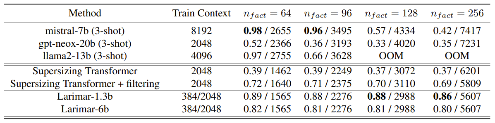
Fig14. Novel fact addition recall rate on FastFacts.
Fig 12 shows Larimar’s recall performance does not degrade much with increasing input context length, even compared to some of most competitive baseline LLMs trained with longer training context. We also compare with Supersizing Transformer, which is a memory-augmented model, however it did not show competitive recall performance because it was not trained to perform memory-conditioned generation. Due to memory processing in the latent space, Larimar is also efficient is terms of number of KV cache token computation compared to baseline methods.6. Conclusion and further improvements #
This paper propose enhancing Large Language Models (LLMs) with a dynamically updatable and distributed episodic memory. By leveraging a one-shot memory update mechanism and combining it with memory-conditioned decoding, this framework demonstrates precise, robust, and significantly faster editing performance compared to baselines in both single-fact and challenging sequential editing experiments. Using the same memory update mechanism enable fast and selective fact deletion operations, as well as effective information deletion mechanisms. Additionally, provide a simple approach for handling long input contexts, demonstrating better fact recall from longer input contexts in Larimar’s memory space compared to state-of-the-art LLMs trained with much larger training context windows. When compared to cutting-edge LLMs trained with much larger training context windows, Larimar showcases its advantages.
Just as the interaction between the Neocortex and Hippocampus inspired the design of the memory module in this paper, drawing inspiration from the Corpus Callosum to conceptualize hardware could also be a viable approach. The Corpus Callosum, as a part of the brain, serves as a major connecting structure of the cerebral nervous system responsible for communication between the hemispheres. It spans across the entire brain, situated between the left and right hemispheres, facilitating the exchange and coordination of information between them to harmonize various brain functions. Adjusting all parameters of the model during the process of learning new knowledge in LLMs incurs significant costs. I propose a method to divide the model’s parameters into parts and update only the relevant parameters corresponding to the data being trained, thereby reducing costs. Introducing a module performing the role of the Corpus Callosum separately allows for the exchange and adjustment of data between parts, enabling more efficient learning with reduced costs and facilitating the processing of various types of data individually and complex information collectively within the model.
Another improvement could be to add a memory module specifically for image processing. The memory module used in this paper accepts natural language as input and produces natural language as output. I propose introducing a separate memory module for processing images, so that when both natural language and images are input simultaneously, the information can be processed and reflected in the output. This would enable more effective processing by LLMs when both images and natural language are provided as input. For example, it could be used to provide a photo of a crime scene and information as input, and obtain clues about the suspect as output.
7. References #
[1] https://arxiv.org/abs/2403.11901 -> Larimar: Large Language Models with Episodic Memory Control
[2] https://arxiv.org/abs/2310.16218 -> Knowledge Editing for Large Language Models: A Survey
[3] https://arxiv.org/abs/2207.04901 -> Exploring Length Generalization in Large Language Models
[4] https://arxiv.org/abs/2402.05813 -> Selective Forgetting: Advancing Machine Unlearning Techniques and Evaluation in Language Models
[5] https://arxiv.org/abs/1410.3916 -> Memory Networks
[6] https://arxiv.org/abs/1312.6114 -> Auto-Encoding Variational Bayes
[7] https://process-mining.tistory.com/161 -> VAE, blog post
[8] https://openreview.net/forum?id=Harn4_EZBw -> Generative Pseudo-Inverse Memory